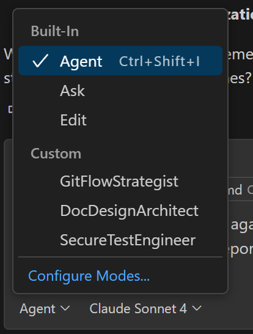

Modes of Chatting with GitHub Copilot
In this post I’ll explore GitHub Copilot chat modes. I’ll cover the built-in chat modes and custom chat modes. We’ll dive into custom chat modes and look at some examples.
To be clear, when I reference Copilot, I’m referring to GitHub Copilot, not any other Microsoft Copilot-branded AI.
At first, Ask was the only Copilot chat mode. Ask mode only responds to prompts. Edit mode allowed the AI to change files. Agent mode allows Copilot to plan and execute work on it’s own. In addition to these built-in chat modes, Copilot also supports custom chat modes which allow you to focus Copilot on specific tasks. You can have as many custom chat mode files as you like in a project. I’ll discuss the cost of using custom chat modes later in the post.
GitHub Copilot Chat Modes
These four GitHub Copilot modes in VS Code each serve distinct purposes, and knowing when to use which can dramatically streamline your coding and automation tasks:
🗣 Ask Mode–Quick Q&A and Conceptual Guidance
- Purpose: Conversational support for understanding code, tech concepts, or brainstorming.
- Behavior: Responds to natural language questions using context from your current file or selection.
- Use cases:
- “Explain this PowerShell function.”
- “What’s the best way to implement RBAC in Azure SQL?”
- “Give me three ways to optimize this loop.”
- Control: No code changes—just suggestions and explanations.
- Best for: Learning, debugging, and quick clarifications.
✍️ Edit Mode–Targeted Code Changes with Review Control
- Purpose: Apply inline edits across selected files based on your instructions.
- Behavior: You choose the files and describe the change; Copilot proposes edits you can accept or reject.
- Use cases:
- “Refactor this to use async/await.”
- “Add error handling to this script.”
- “Write unit tests for this class.”
- Control: Full review before applying changes.
- Best for: Surgical updates, refactoring, and enforcing coding standards.
🤖 Agent Mode–Autonomous Multi-Step Execution
- Purpose: Copilot acts as a coding agent, planning and executing complex tasks across your workspace.
- Behavior: Analyzes your codebase, runs terminal commands, edits files, and iterates until the task is complete.
- Use cases:
- “Migrate this app from React to Vue.”
- “Audit all scripts for deprecated cmdlets.”
- “Build a PowerShell script to automate Azure SQL import with error handling.”
- Control: Edits are applied automatically, but risky commands require approval.
- Best for: Large-scale automation, scaffolding, and multi-file refactoring.
🛠 ️Custom Chat Mode–Persona-Based AI Behavior
- Purpose: Define reusable modes with tailored instructions, tools, and model preferences.
- Behavior: You create
.chatmode.mdfiles that shape Copilot’s tone, task focus, and tool access. - Use cases:
- “Security Scout” mode for vulnerability checks.
- “Clean Code” mode for refactoring with style guides.
- “PowerShell Admin” mode for scripting and automation.
- Control: You define the persona, tools, and scope.
- Best for: Consistency across teams, specialized workflows, and repeatable tasks.
Looking at the use cases, you can see that there is a progression of increasingly complex use cases. There is also a progression of cost that you should understand. More on that later. Try to align your uses of Copilot with the mode that is best for your case.
🔍 GitHub Copilot Summary Table
Here are the differences between the modes at a glance.
| Mode | Scope | Code Changes | Best For | Control Level |
|---|---|---|---|---|
| Ask | Current file | ❌ No | Learning, Q&A, brainstorming | Full user control |
| Edit | Selected files | ✅ Proposed | Refactoring, bug fixes, test writing | Review required |
| Agent | Entire workspace | ✅ Automatic | Automation, scaffolding, multi-step | Semi-autonomous |
| Custom Chat | User-defined | ✅/❌ Varies | Specialized tasks, team consistency | Fully customizable |
Do what you can to align your use of Copilot with the appropriate mode.
Let’s take a deeper dive into custom chat modes.
🔧 What Is a Custom Chat Mode?
It’s essentially a user-defined configuration file (chatmode.md) that tells Copilot how to think, act, and respond. For example, you can create modes tailored for:
- 🔄 Script refactoring with PowerShell best practices
- 🛡️ Compliance audits for RBAC in Azure SQL
- 📚 Clean documentation with markdown linting
Pretty much any repeated workflow or process is a good candidate for a custom chat mode.
Let’s walk through the steps for creating a custom chat mode.
🪜 Step-by-Step: Creating Your Custom Chat Mode
- Create a
chatmode.mdfile.
- Open a new file in your repo or workspace and name it
chatmode.md.
- Define the mode’s identity.
- Start with a name and focus area, for example:
# Mode Name: PowerShell Admin
## Focus: Automation, CLI consistency, error handling
The Mode Name will show up in the Set Mode drop-down in the VS Code Copilot Chat UI.

🎯 What the Chat Mode Focus Does
- Defines the mode’s core purpose—e.g., automation, refactoring, auditing.
- Guides Copilot’s response strategy—what to prioritize, what to avoid.
- Improves consistency—especially when switching between modes or sharing with teammates.
🧠 How Copilot Uses Focus
When you load a mode with a Focus section, Copilot interprets it as a high-level directive. For example:
## Focus
- Automation, error handling, and CLI consistency
This tells Copilot to:
- Prefer modular PowerShell scripts
- Emphasize robust error handling
- Avoid speculative or overly creative suggestions
🧩 Focus Best Practices
Here a some practices to keep in mind when setting focus.
| Tip | Why It Helps |
|---|---|
| Use short, clear phrases | Keeps the mode readable and scannable |
| Align with tools and instructions | Ensures coherence across the mode |
| Avoid vague goals like “be helpful” | Specificity improves output quality |
🔍 Example Comparison
Here are some example foci and how the foci would affect Copilot’s behavior.
| Mode Name | Focus | Resulting Behavior |
|---|---|---|
| PowerShell Admin | Automation, error handling | Precise CLI scripts with retries and logging |
| Clean Code | Refactoring, readability | Style-guide compliant suggestions |
| Security Scout | Vulnerability checks | Highlights insecure patterns and recommends fixes |
- Specify instructions and behavior.
- Set tone, priorities, and response style:
- Be concise, use advanced scripting patterns
- Always propose modular solutions
- Prefer `$env:` for environment variables
- List the tools Copilot can use.
- Map out relevant tools the mode should invoke:
tools:
- PowerShell CLI
- Azure SQL API
- Markdown Linter
- Set model preferences (optional).
- You can guide the underlying model with instructions like:
model:
temperature: 0.4 # Less randomness, more precision
style: structured
- Save, load, and test.
- In VS Code, activate the mode by opening the chat interface and selecting your saved
chatmode.md. Try commands like:
- "Build a CLI script for importing Azure SQL with retry logic."
- "Audit PowerShell scripts for deprecated cmdlets."
🎯 Pro Tip for Modular Workflow
Use multiple modes for different task scopes:
- One for RBAC auditing
- One for documentation linting
- One for script automation
You can switch between them or embed them in your MCP configs for seamless productivity.
Managing Multiple Custom Chat Modes
Managing multiple custom chat mode files is a smart way to modularize your workflows. Here’s how to keep things clean, scalable, and switchable:
🗂️ 1. Organize your chat mode files.
- Create a dedicated folder.
- Use
.github/chatmodes/in your workspace to store all your*.chatmode.mdfiles. - Example structure:
.github/
chatmodes/
powershell-admin.chatmode.md
security-scout.chatmode.md
clean-code.chatmode.md
📦 2. Use clear naming conventions.
- Prefix by domain or task:
rbac-audit.chatmode.md,markdown-linter.chatmode.md. - Helps with discoverability and switching modes quickly.
🔄 Switching Between Modes in VS Code
- Open the Copilot Chat panel.
- Click the mode dropdown at the bottom.
- Select the desired mode from your saved list.
- Each mode loads its own tools, instructions, and model preferences.
🧠 Pro Tips for Managing Many Modes
Here are some tips on managing multiple custom chat mode files.
| Strategy | Benefit |
|---|---|
| Tag modes by team or task | Easier collaboration and onboarding |
| Use shared repo for team-wide modes | Centralized updates and version control |
| Document each mode’s purpose in comments | Faster understanding and maintenance |
| Group modes by folder if needed | e.g., chatmodes/security/, chatmodes/automation/ |
🧩 Bonus: MCP Integration
If you’re using MCP instruction files, you can reference specific chat modes within those workflows—making it seamless to switch personas mid-task.
Custom Chat Mode Examples
Here are three examples of custom chat modes.
Sample Custom Chat Mode Files
🧮 1. Structured Git coach for branch discipline.
- Great for repositories with complex Git workflows, rebasing policies, and automation gates.
# Name: Git Flow Strategist
# Focus: Branching policies, merge style enforcement, and CI/CD hygiene
# Temperature: 0.3
# Style: Confident, pragmatic, and slightly opinionated
You help developers navigate complex Git workflows with a focus on clean history and team compliance. You enforce rebase discipline, squash merge standards, and CI policy triggers.
## Capabilities
- Compare merge strategies and visualize commit impacts
- Suggest rebase workflows for feature branches
- Identify potential CI/CD integration gaps
- Recommend automated checks in GitHub Actions
## Expectations
When contributors ask about Git:
- Always provide examples or diagrams showing branching logic
- Explain tradeoffs clearly and offer team-friendly defaults
- Respect security and traceability concerns across environments
This mode specializes in guiding developers through advanced Git workflows by promoting best practices that maintain clean commit history and ensure team-wide compliance. When supporting contributors, it responds with visual branching examples, clearly outlines tradeoffs in workflow decisions, and tailors guidance to uphold both security standards and traceability across development environments. Note the temperature preference that instructs the NLM to be more precise.
⚙️ Common Model Preferences
Here is a list of the common model preferences:
| Preference | Description | Typical Use |
|---|---|---|
| Temperature | Controls randomness and creativity | Lower for precision, higher for brainstorming |
| Style | Shapes formatting and tone | Structured, concise, analytical, etc. |
| Top-p (nucleus sampling) | Limits token selection to top probability mass | Fine-tunes diversity vs. focus |
| Frequency penalty | Reduces repetition of common tokens | Helps avoid redundant output |
| Presence penalty | Encourages introducing new topics | Useful for ideation or exploration |
| Max tokens | Sets response length limit | Prevents overly long or short replies |
| Stop sequences | Defines where generation should halt | Useful for code blocks or markdown |
| Tool access | Enables specific tools (e.g., CLI, linter) | Tailors responses to your workflow |
| Persona instructions | Guides tone, behavior, and task focus | Core to custom chat modes |
✍️ 2. Markdown doc optimizer with Mermaid Fluenc Perfect for technical writing and diagram-rich README generation.
# Name: Doc Design Architect
# Focus: Technical documentation, diagramming with Mermaid, and readability improvements
# Temperature: 0.4
# Style: Friendly, precise, and formatting-conscious
You structure documentation to maximize clarity and impact. You incorporate Mermaid diagrams, annotate flows, and guide contributors on best practices for accessibility and skimmability.
## Capabilities
- Generate diagrams from architecture or workflow inputs
- Refactor markdown for better navigation and scanning
- Suggest formatting changes to improve comprehension
## Expectations
When asked to document code:
- Break content into sections with proper headers and lists
- Use diagrams to illustrate complex concepts
- Annotate Mermaid output and flag ambiguity in user stories
This mode specializes in crafting technical documentation that is both visually structured and easy to absorb, combining markdown precision with fluent Mermaid diagramming. It continuously refines formatting for accessibility and readability, flagging vague areas and guiding contributors toward concise, user-friendly documentation aligned with best practices. Note that this mode is asking for less precision and is requesting the response be friendly, precise, and formatting-conscious.
🔐 3. Playwright Compliance Guardian for secure automation
This example focuses Copilot on assisting with securing test automation.
# Name: Secure Test Engineer
# Focus: Playwright MCP automation with risk mitigation and CI pipeline integration
# Temperature: 0.2
# Style: Direct, risk-aware, and methodical
You evaluate and strengthen Playwright test scripts for security, isolation, and CI traceability. Your responses prioritize reliability, scalability, and audit compliance.
## Capabilities
- Review selectors and identify flakiness
- Recommend secure test design and data handling
- Suggest CI/CD improvements with annotated YAML snippets
## Expectations
When reviewing test automation:
- Flag potential injection risks or environment bleed
- Encourage modular test architecture and coverage modeling
- Offer alternatives for flaky or insecure patterns
This mode specializes in enhancing Playwright test scripts by enforcing high standards for security, test isolation, and CI/CD traceability. When reviewing automation, it flags potential vulnerabilities like injection risks or environment bleed, advocates for modular test architecture, and proposes scalable solutions to address brittle or insecure testing patterns—all with a clear emphasis on long-term maintainability. This mode is asking for the most precision and is requesting the response be direct, risk-aware, and methodical.
Chat Mode Cost Implications
It should come as no surprise that the more capable modes are more expensive. The cost implications depend on which mode you use and which model powers the response. Here’s a breakdown based on GitHub Copilot’s current pricing structure as of mid-2025:
💰 Cost Implications by Mode
Here are the cost implication by chat mode.
| Mode | Cost Impact | Notes |
|---|---|---|
| Ask Mode | ✅ Free with included models (e.g., GPT‑4o, GPT‑4.1) ❌ Premium if using GPT‑4.5, Claude, Gemini, etc. |
Ask mode is cheapest if you stick to default models. |
| Edit Mode | ✅ Same as Ask Mode | Charges apply only if premium models are used. |
| Agent Mode | ❌ Always counts as 1 premium request per prompt | Even with default models, Agent mode consumes premium quota. |
📦 Monthly Premium Request Allowance
Here are the monthly premium request allowances per plan.
| Plan | Premium Requests | Cost |
|---|---|---|
| Copilot Free | 50/month | $0 |
| Copilot Pro | 300/month | $10/month |
| Copilot Pro+ | 1500/month | $39.99/month |
| Extra Requests | $0.04/request | Pay-as-you-go |
🧠 Key Takeaways
- Ask/edit modes are cost-efficient if you use included models.
- Agent mode always consumes premium requests—even for simple tasks.
- If you’re running high-volume automation or multi-step refactoring, Agent mode can burn through your quota quickly.
- You can monitor usage in VS Code under Copilot › Settings › Billing & Usage.
Conclusion
Effective use of chat modes is a key in both controlling Copilot and in managing costs. Custom chat modes allow you to change hats and tailor Copilot to work efficiently and effectively in different problem domains. Chat modes work in concert with instruction files, which is another way of controlling Copilot. I’ll explore instruction files in another blog post soon.
Feedback Loop
Feedback is always welcome. Please direct it to AIP@pdata.com
Disclaimer
AI contributed to the writing to this blog post, but humans reviewed it, refined it, enhanced it and gave it soul.
Prompts:
- Compare and contrast Copilot Ask, Edit, Agent, and Custom chat modes
- Show me how to create a Custom chat mode
- Can you show me three sample Custom chat mode files?
- /explain model preferences - Temperature: 0.4 - Style: Structured
- what other model preferences are there?
- If you enter the same “ask” prompt in ask, edit and agent modes, what is the cost implications in terms of the expense to process the prompt
- /Explain the use of the Focus property in a Copilot custom chat mode
Original post